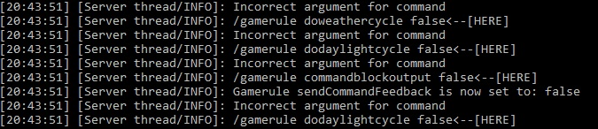
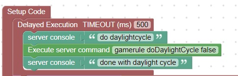

Incorrect Server Commands
On reload, special attention should be made to the server console.
If you see things like:

Further investigation is necessary
If you look at this page for minecraft server commands you can see the proper format of the command
Care should be taken to follow the same capitalization as minecraft is not forgizing about upper/lower case violations
Also server commands cannot be issued until the server is fully loaded, for this reason, a delay should be placed in the setup code
